Определения и примеры
Многочлен — это сумма одночленов.
Например, выражение 2x + 4xy2 + x + 2xy2 является многочленом. Проще говоря, многочлен это несколько одночленов, соединенных знаком «плюс».
В некоторых многочленах одночлены могут соединяться знаком «минус». Например, 3x − 5y − 2x. Следует иметь ввиду, что это по-прежнему сумма одночленов. Многочлен 3x − 5y − 2x это сумма одночленов 3x, −5y и − 2x, то есть 3x + (−5y) + (−2x). После раскрытия скобок образуется многочлен 3x − 5y − 2x.
\[3x + (-5y) + (-2x) = 3x - 5y - 2x\]
Соответственно, рассматривая по отдельности каждый одночлен многочлена, его нужно рассматривать вместе со знаком, который перед ним располагается. Так, в многочлене 3x − 5y − 2x минус перед одночленом 5y относится к коэффициенту 5, а минус перед одночленом 2x относится к коэффициенту 2. Чтобы не противоречить определению многочлена, вычитание можно заменять сложением:
\[3x - 5y - 2x = 3x + (-5y) + (-2x)\]
Но это действие нагромождает многочлен скобками, поэтому вычитание на сложение не заменяют, учитывая в будущем, что каждый одночлен многочлена будет рассматриваться вместе со знаком, который перед ним располагается.
Одночлены, из которых состоит многочлен, называют членами многочлена.
Если многочлен состоит из двух членов, то такой многочлен называют двучленом. Например, многочлен x + y является двучленом.
Если многочлен состоит из трёх членов, то такой многочлен называют трехчленом. Например, многочлен x + y + z является трехчленом.
Если какой-нибудь многочлен содержит обычное число, то это число называют свободным членом многочлена. Например, в многочлене 3x + 5y + z + 7 член 7 является свободным членом. Свободный член многочлена не содержит буквенной части.
Многочленом также является любое числовое выражение. Так, следующие выражения являются многочленами:
\[2 + 3\]
\[5 + 3 + 2\]
\[5 - 4 + 9\]
Сложение многочленов
К многочлену можно прибавить другой многочлен. Например, прибавим к многочлену 2x + y многочлен 3x + y.
Заключим в скобки каждый многочлен и соединим их знаком «плюс», указывая тем самым, что мы складываем многочлены:
\[(2x + y) + (3x + y)\]
Теперь раскрываем скобки:
\[2x + y + 3x + y\]
Далее приведём подобные слагаемые:
\[2x + y + 3x + y = 5x + 2y\]
Таким образом, при сложении многочленов 2x + y и 3x + y получается многочлен 5x + 2y.
Разрешается также сложение многочленов в столбик. Для этого их следует записать так, чтобы подобные слагаемые располагались друг под другом, затем выполнить самó сложение. Решим предыдущий пример в столбик:
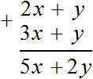
Если в одном из многочленов окажется слагаемое, которое не имеет подобного слагаемого в другом многочлене, оно переносится к результату без изменений. Как говорят при сложении обычных чисел — «сносится».
Например, сложим в столбик многочлены 2x2 + y3 + z + 2 и 5x2 + 2y3. Для начала запишем их так, чтобы подобные слагаемые располагались друг под другом, затем выполним их сложение. Обнаруживаем, что во втором многочлене не содержатся слагаемые, которые можно было бы сложить со слагаемыми z и 2 из первого многочлена. Поэтому слагаемые z и 2 переносятся к результату без изменений (вместе со своими знаками)
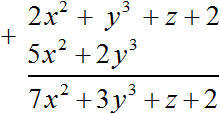
Решим этот же пример с помощью скобок:
(2x2 + y3 + z + 2) + (5x2 + 2y3) = 2x2 + y3 + z + 2 + 5x2 + 2y3 = (2x2 + 5x2) + (y3 + 2y3) + z + 2 = 7x2 + 3y3 + z + 2
Пример 3. Сложить многочлены 7x3 + y + z2 и x3 − z2
Решим этот пример в столбик. Запишем второй многочлен под первым так, чтобы подобные слагаемые располагались друг под другом:
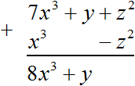
Во втором многочлене не было слагаемого, которого можно было бы сложить со слагаемым y из первого многочлена, поэтому это слагаемое было перенесёно к результату без изменений. А сложение подобных слагаемых z2 и −z2 дало в результате 0. Ноль по традиции не записываем. Поэтому окончательный ответ это 8x3 + y.
Решим этот же пример с помощью скобок:
(7x3 + y + z2) + (x3 − z2) = 7x3 + y + z2 + x3 − z2 = (7x3 + x3) + (z2 − z2) + y = 8x3 + y
Вычитание многочленов
Из многочлена можно вычесть другой многочлен. Например, вычтем из многочлена 2x + y многочлен 3x + y.
Заключим в скобки каждый многочлен и соединим их знаком «минус», указывая тем самым, что мы выполняем вычитание:
\[(2x + y) - (3x + y)\]
Теперь раскроем скобки:
\[2x + y - 3x - y\]
Приведём подобные слагаемые. Слагаемые y и −y являются противоположными. Сумма противоположных слагаемых равна нулю
\[y + (-y) = 0\]
Приводя подобные слагаемые, мы обычно складываем их. Но в качестве знака операции можно использовать знак одночлена. Так, приводя подобные слагаемые y и −y мы сложили их по правилу приведения подобных слагаемых. Но можно не складывая, записать их друг за другом
\[y - y\]
Получится тот же результат, поскольку выражения y + (−y) и y − y одинаково равны нулю:
\[y - y = 0\]
Возвращаемся к нашему примеру. Вычеркнем члены y и −y:
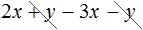
А сложение подобных слагаемых 2x и −3x, даст в результате −x
\[2x + (-3x) = -x\]
Или без сложения, записав члены друг за другом:
\[2x - 3x = -x\]
Значит, при вычитании из многочлена (2x + y) многочлена (3x + y) получится одночлен −x.
Решим этот же пример в столбик:
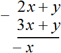
Пример 2. Вычесть из многочлена 13x − 11y + 10z многочлен −15x + 10y − 15z
Решим этот пример с помощью скобок, а затем в столбик:
\[(13x - 11y + 10z) - (-15x + 10y - 15z) = 13x - 11y + 10z + 15x - 10y + 15z = (13x + 15x) + (-11y - 10y) + (10z + 15z) = 28x + (-21y) + 25z = 28x - 21y + 25z\]
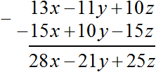
Следует быть внимательным при вычитании в столбик. Если не следить за знаками, вероятность допустить ошибку очень высокá. Нужно учитывать не только знак операции вычитания, но и знак располагающийся перед слагаемым.
Так, в данном примере из слагаемого 10z вычиталось слагаемое −15z
\[10z - (-15z)\]
Результат вычисления этого выражения должен быть положительным, поскольку 10z − (−15z) = 10z + 15z.
Складывая или вычитая многочлены при помощи скобок, первый многочлен в скобки можно не заключать. Так, в данном примере из многочлена 13x − 11y + 10z требовалось вычесть многочлен −15x + 10y − 15z
Вычитание было записано так:
\[(13x - 11y + 10z) - (-15x + 10y - 15z)\]
Но первый многочлен можно не заключать в скобки:
\[13x - 11y + 10z - (-15x + 10y - 15z)\]
Заключение первого многочлена в скобки на первых порах позволяет начинающим наглядно увидеть, что второй многочлен полностью вычитается из первого, а не из определенной его части.
Представление многочлена в виде суммы или разности
Многочлен можно представить в виде суммы или разности многочленов. По сути это обратное действие раскрытию скобок, поскольку идея подразумевает, что имеется некий многочлен, и из него можно образовать сумму или разность многочленов, заключив в скобки некоторые из членов исходного многочлена.
Пусть имеется многочлен 3x + 5y + z + 7. Представим его в виде суммы двух многочленов.
Итак, из членов исходного многочлена нужно образовать два многочлена, сложенные между собой. Давайте заключим в скобки члены 3x и 5y, а также члены z и 7. Далее объединим их с помощью знака «плюс»
\[(3x + 5y) + (z + 7)\]
Значение исходного многочлена при этом не меняется. Если раскрыть скобки в получившемся выражении (3x + 5y) + (z + 7), то снова получим многочлен 3x + 5y + z + 7.
\[(3x + 5y) + (z + 7) = 3x + 5y + z + 7\]
В скобки также можно было бы заключить члены 3x, 5y, z и прибавить это выражение в скобках к члену 7
\[(3x + 5y + z) + 7\]
Представляя многочлен в виде разности многочленов, нужно придерживаться следующего правила. Если члены заключаются в скобки после знака минуса, то этим членам внутри скобок нужно поменять знаки на противоположные.
Вернемся к многочлену 3x + 5y + z + 7. Представим его в виде разности двух многочленов. Давайте заключим в скобки многочлен 3x и 5y, а также z и 7, затем объединим их знаком «минус»
\[(3x + 5y) - (z + 7)\]
Но мы видим, что после знака минуса следует заключение членов z и 7 в скобки. Поэтому этим членам нужно поменять знаки на противоположные. Делать это нужно внутри скобок:
\[(3x + 5y) - (-z - 7)\]
Заключая члены в скобки, нужно следить за тем, чтобы значение нового выражения тождественно было равно предыдущему выражению. Этим и объясняется замена знаков членов внутри скобок. Если в выражении (3x + 5y) − (−z − 7) раскрыть скобки, то получим изначальный многочлен 3x + 5y + z + 7.
\[(3x + 5y) - (-z - 7) = 3x + 5y + z + 7\]
Вообще, представляя многочлен в виде суммы или разности, можно придерживаться следующих правил:
Если перед скобками ставится знак «плюс», то все члены внутри скобок записываются со своими же знаками.
Если перед скобками ставится знак «минус», то все члены внутри скобок записываются с противоположными знаками.
Пример 1. Представить многочлен 3x4 + 2x3 + 5x2 − 4 в виде суммы каких-нибудь двучленов:
(3x4 + 2x3) + (5x2 − 4)
Пример 2. Представить многочлен 3x4 + 2x3 + 5x2 − 4 в виде разности каких-нибудь двучленов:
(3x4 + 2x3) − (−5x2 + 4)
Перед вторыми скобками располагался минус, поэтому члены 5x2 и −4 были записаны с противоположными знаками.
Многочлен и его стандартный вид
Многочлен, как и одночлен, можно привести к стандартному виду. В результате получается упрощенный многочлен, с которым удобно работать.
Чтобы привести многочлен к стандартному виду, нужно привести подобные слагаемые в этом многочлене. Подобные слагаемые в многочлене называют подобными членами многочлена, а приведение подобных слагаемых в многочлене — приведением его подобных членов.
Подобные члены многочлена это члены, имеющие одинаковую буквенную часть.
Приведём многочлен 2x + 4xy2 + x − xy2 к стандартному виду. Для этого приведём его подобные члены. Подобными членами в этом многочлене являются 2x и x, а также 4xy2 и −xy2.
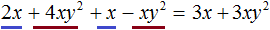
В результате получили многочлен 3x + 3xy2, который не имеет подобных членов. Такой вид многочлена называют многочленом стандартного вида.
Как и у одночлена, у многочлена имеется степень. Чтобы определить степень многочлена, сначала его нужно привести к стандартному виду, затем выбрать тот одночлен, степень которого является наибольшей из всех.
В предыдущем примере мы привели многочлен 2x + 4xy2 + x − xy2 к стандартному виду. В результате получили многочлен 3x + 3xy2. Он состоит из двух одночленов. Степенью первого одночлена является 1, а степенью второго одночлена является 3. Наибольшая из этих степеней является 3. Значит, многочлен 3x + 3xy2 является многочленом третьей степени.
А поскольку многочлен 3x + 3xy2 тождественно равен предыдущему многочлену 2x + 4xy2 + x − xy2, то и этот предыдущий многочлен является многочленом третьей степени.
Степенью многочлена стандартного вида называют наибольшую из степеней, входящих в него одночленов.
В некоторых многочленах прежде всего требуется привести к стандартному виду одночлены, входящие в него, и только потом приводить сам многочлен к стандартному виду.
Например, приведем многочлен 3xx4 + 3xx3 − 5x2x3 − 5x2x к стандартному виду. Этот многочлен состоит из одночленов, которые не приведены к стандартному виду. Сначала приведём их к стандартному виду:
3xx4 + 3xx3 − 5x2x3 − 5x2x = 3x5 + 3x4 − 5x5 − 5x3
Теперь получившийся многочлен 3x5 + 3x4 − 5x5 − 5x3 можно привести к стандартному виду. Для этого приведем его подобные члены. Подобными являются члены 3x5 и −5x5. Больше подобных членов нет. Члены 3x4 и −5x3 будут переписаны без изменений:
3xx4 + 3xx3 − 5x2x3 − 5x2x = 3x5 + 3x4 − 5x5 − 5x3 = −2x5 + 3x4 − 5x3
Пример 2. Привести многочлен 3ab + 4cc + ab + 3c2 к стандартному виду.
Сначала приведем одночлен 4cc, входящий в исходный многочлен, к стандартному виду, получим 4с2
3ab + 4cc + ab + 3c2 = 3ab + 4с2 + ab + 3c2
Далее приведём подобные члены:
3ab + 4cc + ab + 3c2 = 3ab + 4с2 + ab + 3c2 = 4ab + 7c2
Пример 3. Привести многочлен 4x2 − 4y − x2 + 17y − y к стандартному виду.
Подобными членами в данном многочлене являются 4x2 и −x2, а также −4y, 17y и −y. Приведем их:
4x2 − 4y − x2 + 17y − y = 3x2 + 12y
Приводя подобные члены, можно использовать скобки. Для этого подобные члены следует заключить в скобки, затем объединить выражения в скобках с помощью знака «плюс».
Решим предыдущий пример с помощью скобок. Подобными членами в нём были 4x2 и −x2, а также −4y, 17y и −y. Заключим их в скобки и объединим с помощью знака «плюс»
4x2 − 4y − x2 + 17y − y = (4x2 − x2) + (−4y + 17y − y)
Теперь в скобках выполним приведение подобных членов:
4x2 − 4y − x2 + 17y − y = (4x2 − x2) + (−4y + 17y − y) = (3x2) + (12y)
В получившемся выражении (3x2) + (12y) раскроем скобки:
4x2 − 4y − x2 + 17y − y = (4x2 − x2) + (−4y + 17y − y) = (3x2) + (12y) = 3x2 + 12y
Конечно, такой подход нагромождает выражение, но зато позволяет свести к минимуму допущение ошибок.
Пример 4. Привести многочлен 12x2 − 9y − 9x2 + 6y + y к стандартному виду.
Заключим в скобки подобные слагаемые и объединим их с помощью знака «плюс»
12x2 − 9y − 9x2 + 6y + y = (12x2 − 9x2) + (−9y + 6y + y)
Далее вычисляем содержимое скобок:
12x2 − 9y − 9x2 + 6y + y = (12x2 − 9x2) + (−9y + 6y + y) = (3x2) + (−2y)
Избавляемся от скобок при помощи раскрытия:
12x2 − 9y − 9x2 + 6y + y = (12x2 − 9x2) + (−9y + 6y + y) = (3x2) + (−2y) = 3x2 − 2y
Изменение порядка следования членов
Рассмотрим двучлен x − y. Как сделать так, чтобы член −y располагался первым, а член x вторым?
Многочлен это сумма одночленов. То есть исходный двучлен двучлен x − y является суммой x и −y
\[x + (-y)\]
От перестановки мест слагаемых сумма не меняется. Тогда x и −y можно поменять местами
\[-y + x\]
Пример 2. В двучлене −y − x поменять местами члены.
Двучлен −y − x это сумма членов −y и −x
\[-y + (-x)\]
Тогда согласно переместительному закону сложения получим (−x) + (−y). Избавим выражение от скобок:
\[-x - y\]
Таким образом, решение можно записать покороче:
\[-y - x = -x - y\]
Пример 3. Упорядочить члены многочлена x + xy3 − x2 в порядке убывания степеней.
Наибольшую степень в данном многочлене имеет член xy3, далее −x2, а затем x. Запишем их в этом порядке:
x + xy3 − x2 = xy3 − x2 + x
Умножение одночлена на многочлен
Одночлен можно умножить на многочлен. Чтобы умножить одночлен на многочлен, нужно этот одночлен умножить на каждый член многочлена и полученные произведения сложить.
Например, умножим одночлен 3x2 на многочлен 2x + y + 5. При умножении одночлена на многочлен, последний нужно заключать в скобки:
3x2(2x + y + 5)
Теперь умножим одночлен 3x2 на каждый член многочлена 2x + y + 5. Получающиеся произведения будем складывать:
3x2(2x + y + 5) = 3x2 × 2x + 3x2 × y + 3x2 × 5
Вычислим получившиеся произведения:
3x2(2x + y + 5) = 3x2 × 2x + 3x2 × y + 3x2 × 5 = 6x3 + 3x2y + 15x2
Таким образом, при умножении одночлена 3x2 на многочлен 2x + y + 5 получается многочлен 6x3 + 3x2y + 15x2.
Умножение желательно выполнять в уме. Так решение получается короче:
3x2(2x + y + 5) = 6x3 + 3x2y + 15x2
В некоторых примерах одночлен располагается после многочлена. В этом случае опять же каждый член многочлена нужно перемножить с одночленом и полученные произведения сложить.
Например, предыдущий пример мог быть дан в следующем виде:
(2x + y + 5) × 3x2
В этом случае мы умножили бы каждый член многочлен (2x + y + 5) на одночлен 3x2 и сложили бы полученные результаты:
(2x + y + 5) × 3x2 = 2x × 3x2 + y × 3x2 + 5 × 3x2 = 6x3 + 3x2y + 15x2
Умножение одночлена на многочлен (или умножение многочлена на одночлен) основано на распределительном законе умножения.
\[a(b + c) = ab + ac\]
То есть чтобы умножить число a на сумму b + c, нужно число a умножить на каждое слагаемое суммы b + c, и полученные произведения сложить.
Вообще, умножение одночлена на многочлен, да и распределительный закон умножения имеют геометрический смысл.
Допустим, имеется прямоугольник со сторонами a и b
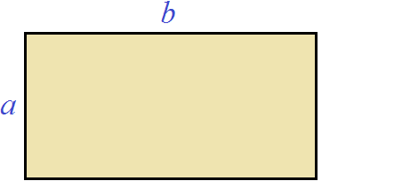
Увеличим сторону b на c
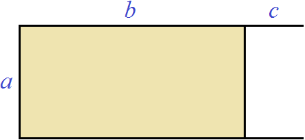
Достроим отсутствующую сторону и закрасим для наглядности получившийся прямоугольник:
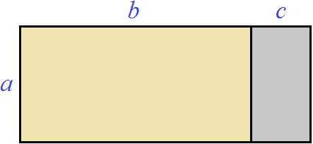
Теперь вычислим площадь получившегося большого прямоугольника. Он включает в себя желтый и серый прямоугольники.
Чтобы вычислить площадь получившегося большого прямоугольника, можно по отдельности вычислить площади желтого и серого прямоугольников и сложить полученные результаты. Площадь желтого прямоугольника будет равна ab, а площадь серого ac
\[ab + ac\]
А это всё равно что длину большого прямоугольника умножить на его ширину. Длина в данном случае это b + c, а ширина это a
\[(b + c) \times a\]
или ширину умножить на длину, чтобы расположить буквы a, b и c в алфавитном порядке:
\[a \times (b + c)\]
Таким образом, выражения a × (b + c) и ab + ac равны одному и тому же значению (одной и той же площади)
\[a \times (b + c) = ab + ac\]
К примеру, пусть у нас имеется прямоугольник длиной 4 см, и шириной 2 см, и мы увеличили длину на 2 см
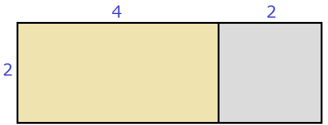
Тогда площадь данного прямоугольника будет равна 2 × (4 + 2) или сумме площадей желтого и серого прямоугольников: 2 × 4 + 2 × 2. Выражения 2 × (4 + 2) и 2 × 4 + 2 × 2 равны одному и тому же значению 12
\[2 \times (4 + 2) = 12\]
\[2 \times 4 + 2 \times 2 = 12\]
Поэтому,
\[2 \times (4 + 2) = 2 \times 4 + 2 \times 2 = 12.\]
Действительно, в получившемся большом прямоугольнике содержится двенадцать квадратных сантиметров:
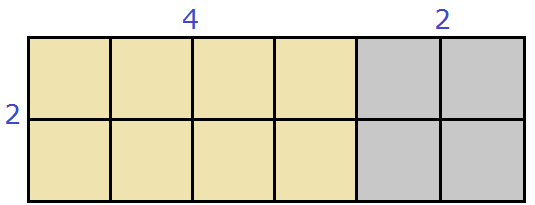
Пример 2. Умножить одночлен 2a на многочлен a2 − 7a − 3
Умножим одночлен 2a на каждый член многочлена a2 − 7a − 3 и сложим полученные произведения:
2a(a2 − 7a − 3) = 2a × a2 + 2a × (−7a) + 2a × (−3) = 2a3 + (−14a2) + (−6a) = 2a3 − 14a2 − 6a
Или покороче:
2a(a2 − 7a − 3) = 2a3 − 14a2 − 6a
Пример 3. Умножить одночлен −a2b2 на многочлен a2b2 − a2 − b2
Умножим одночлен −a2b2 на каждый член многочлена a2b2 − a2 − b2 и сложим полученные произведения:
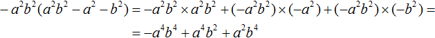
Или покороче:
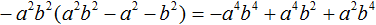
Пример 4. Выполнить умножение −1,4x2y6(5x3y − 1,5xy2 − 2y3)
Умножим одночлен −1,4x2y6 на каждый член многочлена 5x3y − 1,5xy2 − 2y3 и сложим полученные произведения:
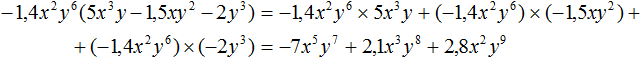
Или покороче:
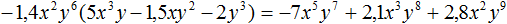
Пример 5. Выполнить умножение
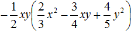
Умножим одночлен
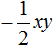
на каждый член многочлена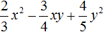
и сложим полученные произведения: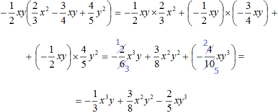
Или покороче:
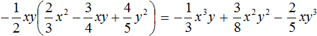
Выполняя короткие решения, результаты записывают сразу друг за другом вместе со знаком полученного члена. Рассмотрим поэтапно, как было выполнено короткое решение данного примера.
Сначала одночлен нужно умножить на первый член многочлена
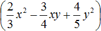
, то есть на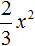
. Умножение выполняется в уме. Получается результат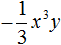
. В исходном выражении ставим знак равенства и записываем первый результат: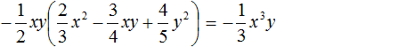
После этого в исходном выражении никаких знаков ставить нельзя. Нужно сразу приступать к следующему умножению.
Следующим шагом будет умножение одночлена на второй член многочлена , то есть на
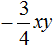
. Получается результат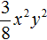
. Этот результат является положительным, то есть со знаком плюс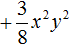
. В исходном выражении этот результат записывается вместе с этим плюсом сразу после члена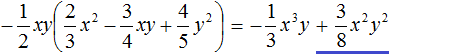
После этого в исходном выражении никаких знаков ставить нельзя. Нужно сразу приступать к следующему умножению.
Следующим шагом будет умножение одночлена на третий член многочлена , то есть на
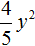
. Получается результат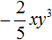
. Этот результат является отрицательным, то есть со знаком минус. В исходном выражении этот результат записывается вместе со своим минусом сразу после члена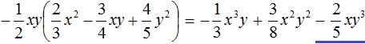
Иногда встречаются выражения, в которых сначала нужно выполнить умножение одночлена на многочлен, затем опять на одночлен. Например:
\[2(a + b)c\]
В этом примере сначала член 2 умножается на многочлен (a + b), затем результат умножается на c. Для начала выполним умножение 2 на (a + b) и заключим полученный результат в скобки
2(a + b)c = (2a + 2b)с
Скобки говорят о том, что результат умножения 2 на (a + b) полностью умножается на c. Если бы мы не заключили скобки 2a + 2b, то получилось бы выражение 2a + 2b × с, в котором на с умножается только 2b. Это привело бы к изменению значения изначального выражения, а это недопустимо.
Итак, получили (2a + 2b)с. Теперь умножаем многочлен (2a + 2b) на одночлен c и получаем окончательный результат:
2(a + b)c = (2a + 2b)с = 2ac + 2bc
Умножение также можно было бы выполнить сначала умножив (a + b) на с и полученный результат перемножить с членом 2
\[2(a + b)c = 2(ac + bc) = 2ac + 2bc\]
В данном случае срабатывает сочетательный закон умножения, который говорит о том, что если выражение состоит из нескольких сомножителей, то произведение не будет зависеть от порядка действий:
a × b × с = (a × b) × с = a × (b × с)
То есть умножение можно выполнять в любом порядке. Это не приведёт к изменению значения изначального выражения.
Умножение многочлена на многочлен
Чтобы умножить многочлен на многочлен, нужно каждый член первого многочлена умножить на каждый член второго многочлена и полученные произведения сложить.
Например, умножим многочлен x + 3 на y + 4
Заключим в скобки каждый многочлен и объединим их знаком умножения ×
\[(x + 3) \times (y + 4)\]
Либо запишем их друг за другом без знака ×. Это тоже будет означать умножение:
\[(x + 3)(y + 4)\]
Теперь умножим каждый член первого многочлена (x + 3) на каждый член второго многочлена (y + 4). Здесь опять же будет применяться распределительный закон умножения:
\[(a + b)c= ac + bc\]
Отличие в том, что у нас вместо переменной c имеется многочлен (y + 4), состоящий из членов y и 4. Наша задача умножить (x + 3) сначала на y, затем на 4. Чтобы не допустить ошибку, можно представить, что члена 4 пока не существует вовсе. Для этого его можно закрыть рукой:
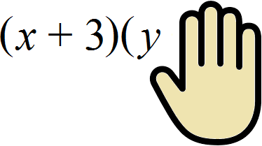
Получаем привычное для нас умножение многочлена на одночлен. А именно, умножение многочлена (x + 3) на одночлен y. Выполним это умножение:
\[(x + 3)(y + 4) = xy + 3y\]
Мы умножили (x + 3) на y. Теперь осталось умножить (x + 3) на 4. Для этого умножаем каждый член многочлена (x + 3) на одночлен 4. На этот раз в исходном выражении (x + 3)(y + 4) рукой закроем y, поскольку на него мы уже умножали многочлен (x + 3)
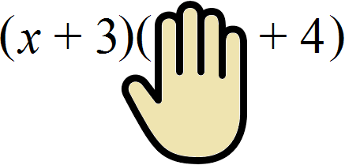
Получаем умножение многочлена (x + 3) на одночлен 4. Выполним это умножение. Умножение необходимо продолжать в исходном примере (x + 3)(y + 4) = xy + 3y
\[(x + 3)(y + 4) = xy + 3y + 4x + 12\]
Таким образом, при умножении многочлена (x + 3) на многочлен (y + 4) получается многочлен xy + 3y + 4x + 12.
По другому умножение многочлена на многочлен можно выполнить ещё так: каждый член первого многочлена умножить на второй многочлен целиком и полученные произведения сложить.
Решим предыдущий пример, воспользовавшись этим способом. Умножим каждый член многочлена x + 3 на весь многочлен y + 4 целиком и сложим полученные произведения:
\[(x + 3)(y + 4) = x(y + 4) + 3(y + 4)\]
В результате приходим к умножению одночлена на многочлен, которое мы изучили ранее. Выполним это умножение:
\[(x + 3)(y + 4) = x(y + 4) + 3(y + 4) = xy + 4x + 3y + 12\]
Получится тот же результат что и раньше, но члены полученного многочлена будут располагаться немного по другому.
Умножение многочлена на многочлен имеет геометрический смысл. Допустим, имеется прямоугольник, длина которого a и ширина b
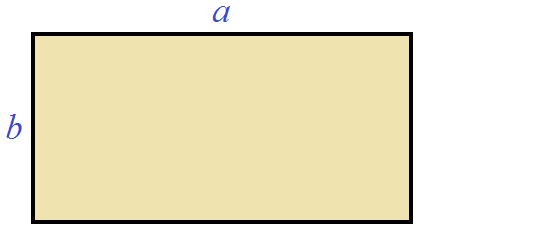
Площадь этого прямоугольника будет равна a × b.
Увеличим длину данного прямоугольника на x, а ширину на y
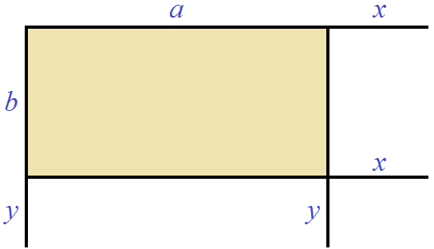
Достроим отсутствующие стороны и закрасим для наглядности получившиеся прямоугольники:
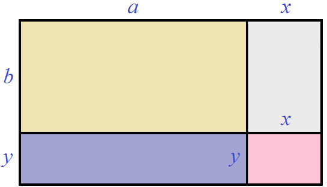
Теперь вычислим площадь получившегося большого прямоугольника. Для этого вычислим по отдельности площадь каждого прямоугольника, входящего в этот большой прямоугольник и сложим полученные результаты. Площадь жёлтого прямоугольника будет равна ab, площадь серого xb, площадь фиолетового ay, площадь розового xy
\[ab + xb + ay + xy\]
А это всё равно что умножить длину получившегося большого прямоугольника на его ширину. Длина в данном случае это a + x, а ширина b + y
\[(a + x)(b + y)\]
То есть выражения (a + x)(b + y) и ab + xb + ay + xy тождественно равны
\[(a + x)(b + y) = ab + xb + ay + xy\]
Представим, что у нас имелся прямоугольник, длиной 6 см и шириной 3 см, и мы увеличили его длину на 2 см, а ширину на 1 см
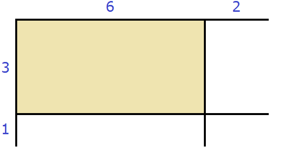
Достроим отсутствующие стороны и закрасим для наглядности получившиеся прямоугольники:
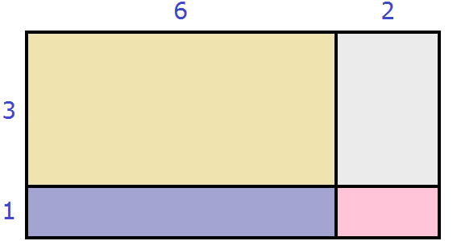
Площадь получившегося большого прямоугольника будет равна (6 + 2)(3 + 1) или сумме площадей прямоугольников, входящих в большой прямоугольник: 6 × 3 + 2 × 3 + 6 × 1 + 2 × 1. В обоих случаях получим один и тот же результат 32
\[(6 + 2)(3 + 1) = 32\]
\[6 \times 3 + 2 \times 3 + 6 \times 1 + 2 \times 1 = 32\]
Поэтому,
\[(6 + 2)(3 + 1) = 6 \times 3 + 2 \times 3 + 6 \times 1 + 2 \times 1 = 18 + 6 + 6 + 2 = 32\]
Действительно, в получившемся большом прямоугольнике содержится тридцать два квадратных сантиметра:
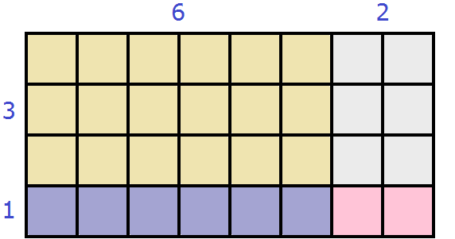
Пример 2. Умножить многочлен a + b на c + d
Заключим исходные многочлены в скобки и запишем их друг за другом:
\[(a + b)(c + d)\]
Теперь умножим каждый член первого многочлена (a + b) на каждый член второго многочлена (c + d)
\[(a + b)(c + d) = ac + bc + ad + bd\]
Пример 4. Выполнить умножение (−x − 2y)(x + 2y2)
Умножим каждый член многочлена (−x − 2y) на каждый член многочлена (x + 2y2)
(−x − 2y)(x + 2y2) = −x2 − 2xy − 2xy2 − 4y3
Результат перемножения членов нужно записывать вместе со знаками этих членов. Рассмотрим поэтапно, как был решён данный пример.
Итак, требуется умножить многочлен (−x − 2y) на многочлен (x + 2y2). Сначала надо умножить многочлен (−x − 2y) на первый член многочлена (x + 2y2), то есть на x.
Умножаем −x на x, получаем −x2. В исходном выражении (−x − 2y)(x + 2y2) ставим знак равенства и записываем −x2
(−x − 2y)(x + 2y2) = −x2
После этого в исходном выражении никаких знаков ставить нельзя. Нужно сразу приступать к следующему умножению. А именно умножению −2y на x . Получится −2xy. Этот результат является отрицательным, то есть со знаком минус. В исходном выражении записываем результат −2xy сразу после члена −x2
(−x − 2y)(x + 2y2) = −x2 − 2xy
Теперь умножаем многочлен (−x − 2y) на второй член многочлена (x + 2y2), то есть на 2y2
Умножаем −x на 2y2, получаем −2xy2. В исходном выражении записываем этот результат сразу после члена −2xy
(−x − 2y)(x + 2y2) = −x2 − 2xy − 2xy2
Приступаем к следующему умножению. А именно умножению −2y на 2y2. Получаем −4y3. В исходном выражении этот результат записываем вместе со своим минусом сразу после члена −2xy2
(−x − 2y)(x + 2y2) = −x2 − 2xy − 2xy2 − 4y3
Пример 5. Выполнить умножение (4a2 + 2ab − b2)(2a − b)
Умножим каждый член многочлена (4a2 + 2ab − b2) на каждый член многочлена (2a − b)
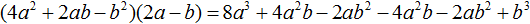
В получившемся выражении можно привести подобные слагаемые:
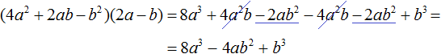
Пример 6. Выполнить умножение −(a + b)(с − d)
В этот раз перед скобками располагается минус. Этот минус является коэффициентом −1. То есть исходное выражение является произведением трёх сомножителей: −1, многочлена (a + b) и многочлена (с − d).
−1(a + b)(с − d)
Согласно сочетательному закону умножения, если выражение состоит из нескольких сомножителей, то его можно вычислять в любом порядке.
Поэтому сначала можно перемножить многочлены (a + b) и (с − d) и полученный в результате многочлен умножить на −1. Перемножение многочленов (a + b) и (с − d) нужно выполнять в скобках
−1(a + b)(с − d) = −1(ac + bc − ad − bd)
Теперь перемножаем −1 и многочлен (ac + bc − ad − bd). В результате все члены многочлена (ac + bc − ad − bd) поменяют свои знаки на противоположные:
−1(a + b)(с − d) = −1(ac + bc − ad − bd) = −ac − bc + ad + bd
Либо можно было перемножить −1 с первым многочленом (a + b) и результат перемножить с многочленом (с − d)
−1(a + b)(с − d) = (−a − b)(с − d) = −ac − bc + ad + bd
Пример 7. Выполнить умножение x2(x + 5)(x − 3)
Сначала перемножим многочлены (x + 5) и (x − 3), затем полученный в результате многочлен перемножим с x2
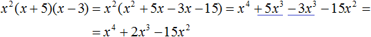
Пример 8. Выполнить умножение (a + 1)(a + 2)(a + 3)
Сначала перемножим многочлены (a + 1) и (a + 2), затем полученный многочлен перемножим с многочленом (a + 3)
Итак, перемножим (a + 1) и (a + 2)
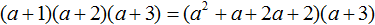
Полученный многочлен (a2 + a + 2a + 2) перемножим с (a + 3)
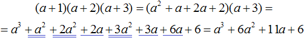
Если быстрое перемножение многочленов на первых порах даётся тяжело, можно воспользоваться подробным решением, суть которого заключается в том, чтобы записать, как каждый член первого многочлена умножается на весь второй многочлен целиком. Такая запись хоть и занимает место, но позволяет свести к минимуму допущение ошибок.
Например, выполним умножение (a + b)(c + d)
Запишем как каждый член многочлена a + b умножается на весь многочлен c + d целиком. В результате придём к умножению одночлена на многочлен, выполнять которое проще:
(a + b)(c + d) = a(с + d) + b(с + d) = aс + ad + bс + bd
Такая запись удобна при умножении двучлена на какой-нибудь многочлен, в котором содержится больше двух членов. Например:
(x + y)(x2 + 2xy + y2) = x(x2 + 2xy + y2) + y(x2 + 2xy + y2) = x3 + 2x2y + xy2 + x2y + 2xy2 + y3 = x3 + 3x2y + 3xy2 + y3
Или при перемножении многочленов, содержащих больше двух членов. Например, умножим многочлен x2 + 2x − 5 на многочлен x3 − x + 2
(x2 + 2x − 5)(x3 − x + 2)
Запишем перемножение исходных многочленов в виде умножения каждого члена многочлена x2 + 2x − 5 на многочлен x3 − x + 2.
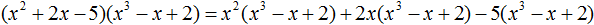
Получили привычное для нас умножения одночленов на многочлены. Выполним эти умножения:
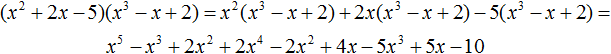
В получившемся многочлене приведём подобные члены:
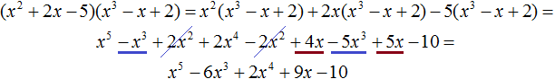
Одночлены, входящие в получившийся многочлен, расположим в порядке убывания степеней. Делать это необязательно. Но такая запись будет красивее:
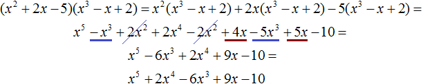
Вынесение общего множителя за скобки
Мы уже учились выносить общий множитель за скобки в простых буквенных выражениях. Теперь мы немного углубимся в эту тему, и научимся выносить общий множитель за скобки в многочлене. Принцип вынесения будет таким же, как и в простом буквенном выражении. Небольшие трудности могут возникнуть лишь с многочленами, состоящими из степеней.
Рассмотрим простой двучлен 6xy + 3xz. Вынесем в нём общий множитель за скобки. В данном случае за скобки можно вынести общий множитель 3x. Напомним, что при вынесении общего множителя за скобки, каждое слагаемое исходного выражения надо разделить на этот общий множитель:
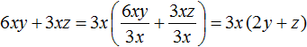
Или покороче:
В результате получили 3x(2y + z). При этом в скобках образовался другой более простой многочлен (2y + z). Выносимый за скобки общий множитель выбирают так, чтобы в скобках остались члены, которые не содержат общего буквенного множителя, а модули коэффициентов этих членов не имели общего делителя, кроме единицы.
Поэтому в приведенном примере за скобки был вынесен общий множитель 3x. В скобках образовался многочлен 2y + z, модули коэффициентов которого не имеют общего делителя кроме единицы. Это требование можно выполнить, если найти наибольший общий делитель (НОД) модулей коэффициентов исходных членов. Этот НОД станóвится коэффициентом общего множителя, выносимого за скобки. В нашем случае исходный многочлен был 6xy + 3xz. Коэффициенты исходных членов это числа 6 и 3, а их НОД равен 3.
А буквенную часть общего множителя выбирают так, чтобы члены в скобках не имели общих буквенных множителей. В данном случае это требование выполнилось легко. Общий буквенный множитель был виден невооруженным глазом — это был множитель x.
Пример 2. Вынести общий множитель за скобки в многочлене x2 + x + xy
Все члены данного многочлены имеют коэффициент единицу. Наибольший общий делитель модулей из этих единиц есть единица. Поэтому числовая часть выносимого за скобки множителя будет единицей. Но единицу в качестве коэффициента не записывают.
Далее выбираем буквенную часть общего множителя. Прежде всего надо понимать, что любой член, входящий в многочлен, является одночленом. А одночлен это произведение чисел, переменных и степеней. Даже если членом многочлена является обычное число, его всегда можно представить в виде произведения единицы и самого этого числа. Например, если в многочлене содержится число 5, его можно представить в виде 1 × 5. Если в многочлене содержится число 8, то его можно представить в виде произведения множителей 2 × 2 × 2 (или как 2 × 4)
С переменными такая же ситуация. Если в многочлене содержится член, являющийся переменной или степенью, их всегда можно представить в виде произведения. К примеру, если многочлен содержит одночлен x, его можно представить в виде произведения 1 × x. Если же многочлен содержит одночлен x3, его можно представить в виде произведения xxx.
Одночлены, из которых состоит многочлен x2 + x + xy, можно разложить на множители так, чтобы мы смогли увидеть буквенный сомножитель, который является общим для всех членов.
Итак, первый член многочлена x2 + x + xy, а именно x2 можно представить в виде произведения x × x. Второй член x можно представить в виде 1 × x. А третий член xy оставим без изменения, или для наглядности перепишем его с помощью знака умножения x × y
Каждый член многочлена представлен в виде произведения множителей, из которых состоят эти члены. Легко заметить, что во всех трёх произведениях общим сомножителем является x. Выделим его:
Этот множитель x и вынесем за скобки. Опять же при вынесении общего множителя за скобки каждое слагаемое исходного выражения делим на этот общий множитель. В нашем случае каждый член многочлена x × x + 1 × x + x × y нужно разделить на общий множитель x
Значит, при вынесении общего множителя за скобки в многочлене x2 + x + xy, получается x(x + 1 + y)
Или покороче:
В результате в скобках остаются члены, которые не имеют общих буквенных сомножителей, а модули коэффициентов этих членов не имеют общих делителей, кроме 1.
Пример 2. Вынести общий множитель за скобки в многочлене 15x2y3 + 12xy2 + 3xy2
Определим коэффициент общего множителя, выносимого за скобки. Наибольший общий делитель модулей коэффициентов 15, 12 и 3 это число 3. Значит, число 3 будет коэффициентом общего множителя, выносимого за скобки.
Теперь определим буквенную часть общего множителя, выносимого за скобки. Её нужно выбирать так, чтобы в скобках остались члены, которые не содержат общего буквенного множителя.
Перепишем буквенные части исходного многочлена 15x2y3 + 12xy2 + 3xy2 в виде разложения на множители. Это позволит хорошо увидеть, что именно можно вынести за скобки:
Видим, что среди буквенных частей общим множителем является xyy, то есть xy2. Если вынести этот множитель за скобки, в скобках останется многочлен, не имеющий общего буквенного множителя.
В итоге общим множителем, выносимым за скобки, будет множитель 3xy2
Или покороче:
Для проверки можно выполнить умножение 3xy2(5xy + 4 + 1). В результате должен получиться многочлен 15x2y3 + 12xy2 + 3xy2
3xy2(5xy + 4 + 1) = 3xy2 × 5xy + 3xy2 × 4 + 3xy2 × 1 = 15x2y3 + 12xy2 + 3xy2
Пример 3. Вынести общий множитель за скобки в выражении x2 + x
В данном случае за скобки можно вынести x
Это потому что первый член x2 можно представить как xx. А второй член x представить как 1 × x
x2 + x = xx + 1 × x
Не следует на письме подробно расписывать содержимое каждого члена, разлагая его на множители. Это легко делается в уме.
Пример 4. Вынести общий множитель за скобки в многочлене 5y2 − 15y
В данном случае за скобки можно вынести 5y. Наибольший общий делитель модулей коэффициентов 5 и 15 это число 5. Среди буквенных множителей общим является y
Пример 5. Вынести общий множитель за скобки в многочлене 5y2 − 15y3
В данном примере за скобки можно вынести 5y2. Наибольший общий делитель модулей коэффициентов 5 и 15 это число 5. Среди буквенных множителей общим является y2
Пример 6. Вынести общий множитель за скобки в многочлене 20x4 − 25x2y2 − 10x3
В данном примере за скобки можно вынести 5x2. Наибольший общий делитель модулей коэффициентов 20, −25 и −10 это число 5. Среди буквенных множителей общим является x2
Пример 7. Вынести общий множитель за скобки в многочлене am + am + 1
Второй член am + 1 представляет собой произведение из am и a, поскольку am × a = am + 1
Заменим в исходном примере член am + 1 на тождественно равное ему произведение am × a. Так проще будет увидеть общий множитель:
Теперь можно увидеть, что общим множителем является am. Его и вынесем за скобки:
Проверка на тождественность
Решение задачи с многочленами порой растягивается на несколько строк. Каждое следующее преобразование должно быть тождественно равно предыдущему. Если возникают сомнения в правильности своих действий, то можно подставить произвольные значения переменных в исходное и полученное выражение. Если исходное и полученное выражение будут равны одному и тому же значению, то можно быть уверенным, что задача была решена правильно.
Допустим, нам нужно вынести общий множитель за скобки в следующем многочлене:
2x + 4x2
В данном случае за скобки можно вынести общий множитель 2x
2x + 4x2 = 2x(1 + 2x)
Представим, что мы не уверены в таком решении. В этом случае нужно взять любое значение переменной x и подставить его сначала в исходное выражение 2x + 4x2, затем в полученное 2x(1 + 2x). Если в обоих случаях результат будет одинаковым, то это будет означать, что задача решена правильно.
Возьмём произвольное значение x и подставим его в исходное выражение 2x + 4x2. Пусть x = 2. Тогда получим:
2x + 4x2 = 2 × 2 + 4 × 22 = 4 + 16 = 20
Теперь подставим значение 2 в преобразованное выражение 2x(1 + 2x)
\[2x(1 + 2x) = 2 \times 2 \times (1 + 2 \times 2) = 4 \times 5 = 20\]
То есть при x = 2 выражения 2x + 4x2 и 2x(1 + 2x) равны одному и тому же значению. Это значит, что задача была решена правильно. Тоже самое будет происходить и при других значениях переменных x. Например, проверим наше решение при x = 1
2x + 4x2 = 2 × 1 + 4 × 12 = 2 + 4 = 6
2x(1 + 2x) = 2 × 1 × (1 + 2 × 1) = 2 × 3 = 6
Пример 2. Вычесть из многочлена 5x2 − 3x + 4 многочлен 4x2 − x и проверить полученный результат, подставив вместо переменной x произвольное значение.
Выполним вычитание:
Мы выполнили два преобразования: cначала раскрыли скобки, а затем привели подобные члены. Теперь проверим эти два преобразования на тождественность. Пусть x = 2. Подставим это значение сначала в исходное выражение, а затем в преобразованные:
Видим, что при каждом преобразовании значение выражения при x = 2 не менялось. Это значит, что задача была решена правильно.
Задания для самостоятельного решения
Показать решение
Показать решение
Показать решение
Показать решение
Показать решение
Показать решение
Показать решение
Показать решение
Показать решение
Показать решение
Показать решение
Показать решение
Показать решение
Показать решение
Показать решение
Показать решение
Показать решение
Показать решение
Показать решение
Показать решение
Показать решение
Показать решение
Показать решение
Показать решение
Показать решение
Показать решение
Показать решение
Показать решение
Показать решение
Показать решение
Показать решение
Показать решение
Показать решение
Показать решение
Показать решение
Показать решение
Показать решение
Показать решение
Показать решение
Показать решение
Показать решение
Показать решение
Показать решение
Показать решение
Показать решение
Показать решение
Показать решение
Показать решение
Показать решение
Показать решение
Показать решение
Показать решение
Показать решение
Показать решение